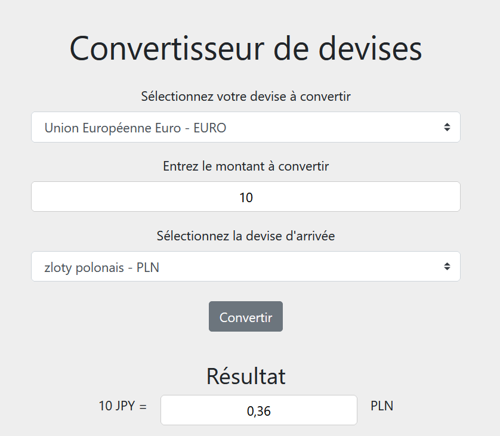
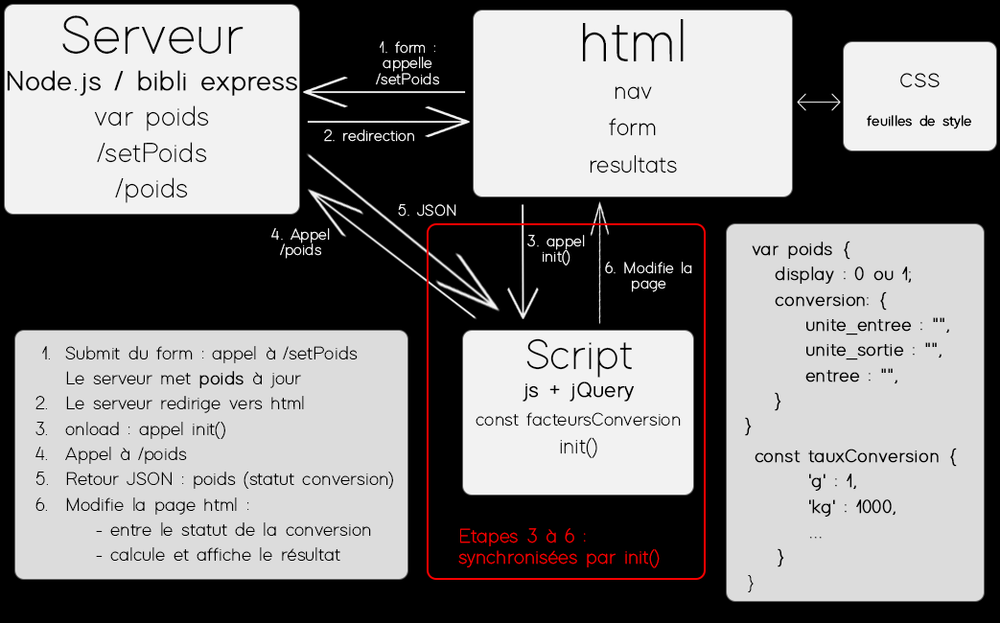
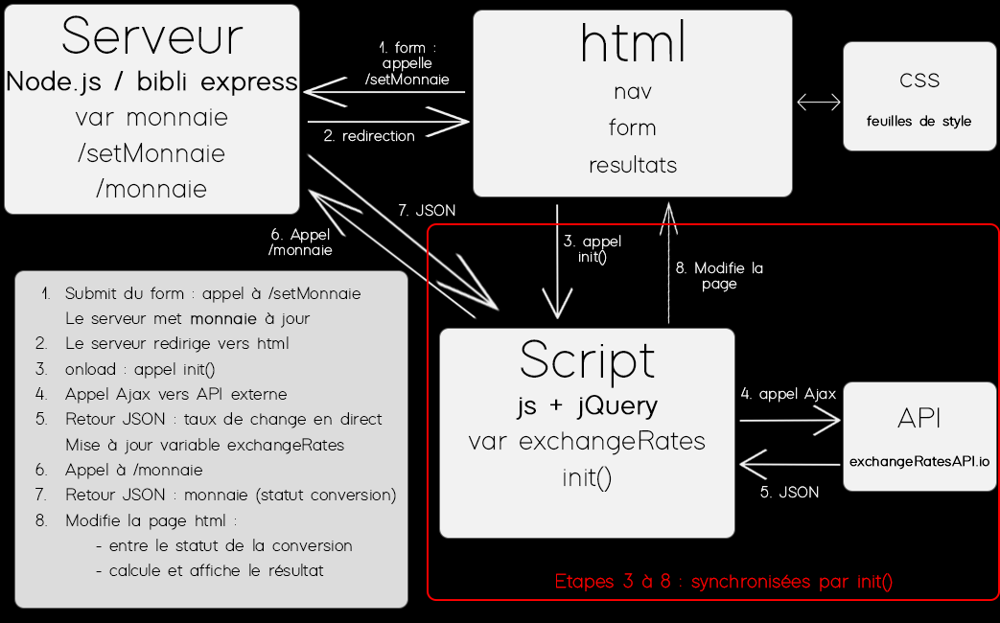
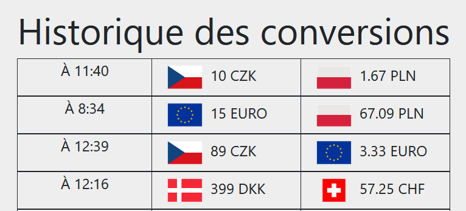
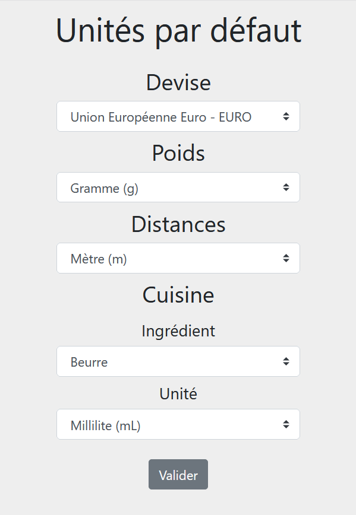
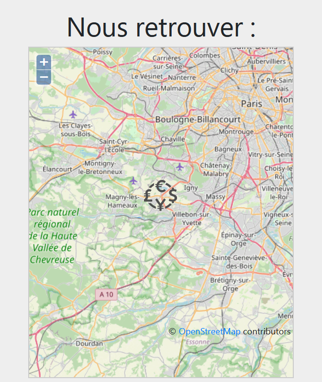

Nous avons décidé de développé un site dédié à des conversions en tout genre, et nous l'avons appelé ConvertiMax. Ce choix est venu d'une volonté de mettre en oeuvre le plus de fonctionnalités possibles par rapport au cours suivi, tout en développant un outil indépendant, fonctionnel.
Nous avons commencé par faire deux convertisseurs simples d'unités de poids et de distance. Ils prennent en entrée deux unités et une valeur à transformer.
Ils sont "simples" au sens où l'on a besoin d'un unique taux de conversion, fixe, pour calculer le résultat.
Pour le poids les unités sont :
Nous avons ensuite pensé aux unités de mesures en cuisine qui mélangent les volumes et poids, ce qui nécessite de prendre en compte des ingrédients spécifiques. Les recettes de cuisine incluent aussi des unités de mesures non métriques comme les cuillères à soupes ou les cuillères à café.
Cette fonctionnalité ajoute donc en plus la masse volumique de l'ingrédient considéré. Les ingrédients possibles sont :
Et les unités possibles sont :
Nous avons ensuite voulu inclure l'utilisation d'une API sur notre site. D'où l'idée de convertir des devises, en récupérant les taux de change en direct pour calculer les résultats de conversion.
Les devises que nous avons considéré sont présentes ici.
Notre outil de conversion des devises inclut aussi un historique des conversions effectuées : on enregistre les heures, devises de départ, d'arrivée, et bien sûr les montants convertis et les résultats.
Dans le cas du poids et de la distance, la transformation se fait avec un dictionnaire statique de correspondance entre les unités : les clefs sont les unités et les valeurs correspondent à combien de cette unité équivaut à 1 gramme ou à 1 mètre.
var facteursConversionPoids = {
'g' : 1,
'kg' : 1000,
'ounce (UK)' : 28.349,
'pound' : 453.59
};
var facteursConversionDistance = {
'm' : 1,
'km' : 1000,
'mile' : 1609.34,
'mille marin' : 1852
};
Pour la conversion pour la cuisine, l'idée est la même mais avec un dictionnaire additionnel pour la densité des ingrédients.
var densitesCuisine = {
"Beurre" : 9.1,
"Eau" : 10,
"Farine" : 5.5,
"Huile" : 9.2,
"Lait" : 10.3,
"Sucre" : 15.9
};
var facteursConversion = {
"mL" : 0.1,
"cL" : 1,
"tasse (US)" : 240,
"tsp" : 0.492892,
"tcp" : 1.47868
};
Ces dictionnaires sont des constantes stockées dans des fichiers Javascript que l'on appelle lors d'une conversion.
On trouvera ci-dessous un schéma de la structure mise en oeuvre. Les pages du site correspondent à l'encadré "html". Nous utilisons un serveur node.js qui possède notamment une variable poids (dans cet exemple) qui contient les informations de la conversion en cours, comme on peut le voir dans l'encadré en bas à droite de l'image. L'attribut display, valant 0 ou 1, nous sert dans l'affichage de la page. Si ce paramètre est à 0, l'onglet "résultats" ne s'affiche pas.
L'encadré en bas à gauche détaille les différentes étapes : on utilise notamment jQuery et des requêtes AJAX. Remarquez que la constante des facteurs de conversion est stockée dans le fichier de script. De plus nous avons synchronisé les requêtes grâce à des fonctions de callback.
Pour avoir les taux de changes de devises en direct nous avons utilisé d'api exchangeratesapi, qui nous renoie un json sous cette forme :
{
"base": "EUR",
"date": "2020-06-14",
"rates": {
"CAD": 1.565,
"CHF": 1.1798,
"GBP": 0.87295,
"SEK": 10.2983,
"EUR": 1.092,
"USD": 1.2234,
...
}
}
Pour faire appel à cet API nous utilisons des requêtes AJAX. Ceci rajoute deux étapes au schéma précédent, comme détaillé ci-dessous.
Notre site utilise une base de données sqlite3 pour stocker toutes les conversions de devises qui ont été faites, et les afficher sur la page historique. La base de données utilisée comprend une seule table, "historique". Cette table contient une seule ligne, avec deux champs, l'id et la valeur. La valeur correspond à un json sous forme de chaîne de caractère (que nous analysons avec JSON.parse). Une fois analysé, nous obtenons un dictionnaire sous cette forme :
historique = {
'13:50:38': {
'value-1': 380,
'value-2': 423.85,
'unit-1': 'GBP',
'unit-2': 'EURO'
},
'14:04:06': {
'value-1': 380,
'value-2': 423.85,
'unit-1': 'GBP',
'unit-2': 'EURO'
}
}
La clef correspond au moment où la conversion a été faite (il pourrait y avoir une perte de donnée si deux conversions sont faites à la même seconde, mais ça ne causerait pas d'erreur), et les valeurs sont des dictionnaires qui contiennent les valeurs de départ et d'arrivée, ainsi que les devises considérées. Nous utilisons ici le package sqlite3 de node.js. Nous avons ensuite utilisé jQuery pour parcourir ce dictionnaire et créer une ligne de tableau pour chaque conversion.
L'utilisateur a la possibilité de choisir ses unités par défaut sur la page d'accueil du site. C'est l'option qui sera sélectionnée par défaut dans les autres onglets contenant des formulaires. Nous avons ici aussi utilisé des requêtes AJAX pour accéder et modifier les options, qui sont stockées dans notre index.js.
Notre site fait aussi appel à OpenLayers pour afficher une carte avec un logo à l'emplacement de CentraleSupélec (les coordonées montrées peuvent être facilement modifiées) dans la page "contact".
Le remplissage de la base de données pour l'historique des conversions est effectué par le serveur lors de chaque nouvelle conversion de devises. Or, pour cela, le serveur doit calculer le résultat de la conversion, alors que dans notre schéma de base le calcul est effectué lors de l'exécution du script javascript. Ainsi, le calcul est effectué deux fois, ce qui n'est pas optimal.
Pour un type de conversion donnée, la liste des unités est en fait répétée trois fois : dans la table de correspondances qui contient les taux de conversion, dans le formulaire correspondant, ainsi que dans le formulaire de choix des préférences. De ce fait, pour ajouter une nouvelle unité de conversion, il faut modifier ces trois zones de code.
Une première étape pour améliorer ça serait de paramétrer les formulaires en fonction des unités présentes dans la table d'association.
On pourrait même remplacer les diverses tables d'association par une unique base de données, qui serait donc le seul élément à modifier pour ajouter ou supprimer des unités de conversion.
Même s'il s'agit d'un point que nous n'avons pas abordé cette semaine, il nous semble que notre site ne comprend pas vraiment d'étapes de validation des données retournées par les différentes requêtes. Ainsi, on ne gère pas le cas où un petit malin enverrait au site une requête sur le modèle de celles générées par les différents formulaires, avec des données non conformes à ce qui devrait être envoyé.
Tout d'abord, nous pourrions ajouter d'autres outils de conversion sur le même modèle : conversions d'angles, de pressions...
Nous avons aussi pensé à utiliser une API externe pour convertir des adresses postales en coordonnées GPS et inversement, voire même pourquoi pas en coordonnées sphériques dans le référentiel géocentrique.
Nous avions aussi pensé à un onglet de traduction ("conversion d'une langue à l'autre", si l'on veut). Seulement, il nous a semblé que ce n'était pas complètement cohérent avec le reste, et surtout nous n'avons pas trouvé d'API gratuite pour faire ça : en particulier, celle de Google Translate est payante.
Nous pourrions envisager d'ajouter une seconde langue au site, avec un bouton pour passer de l'un à l'autre.